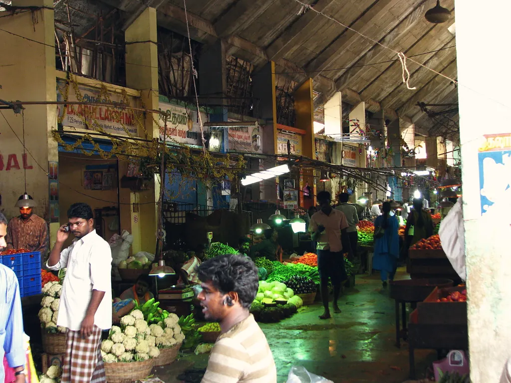
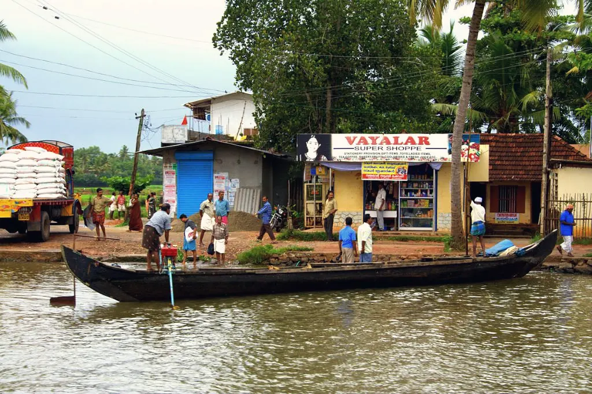
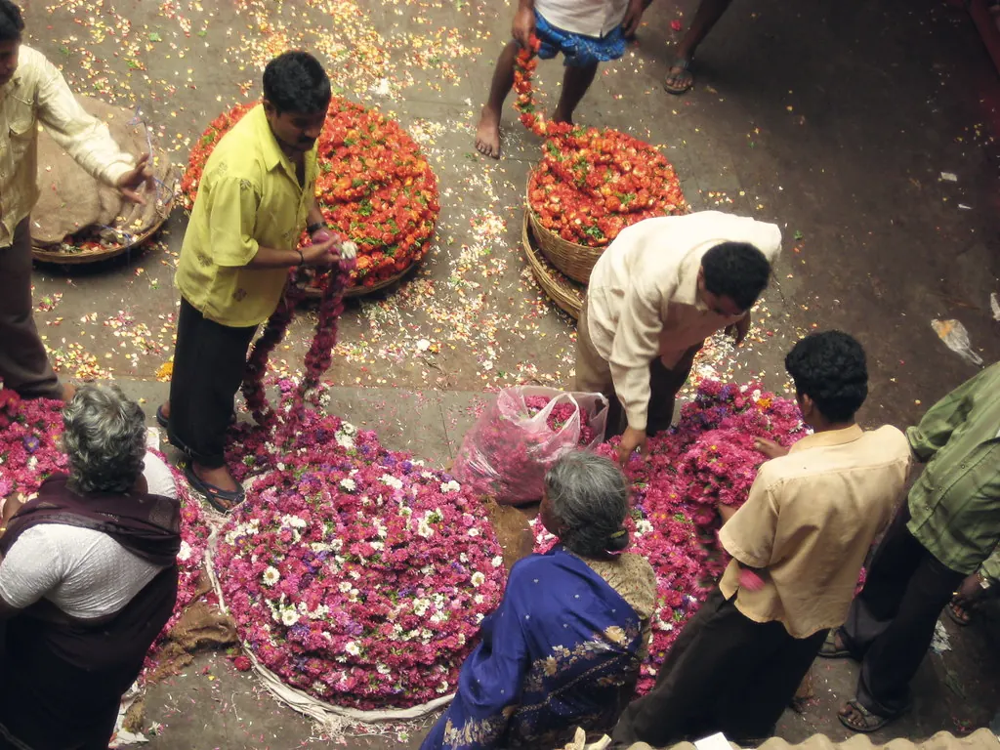
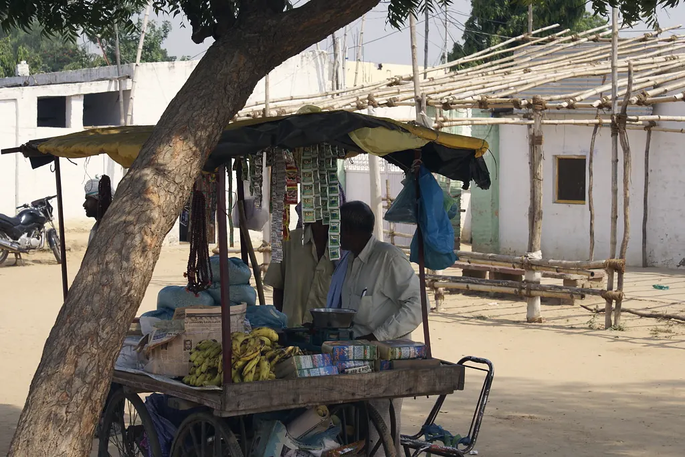
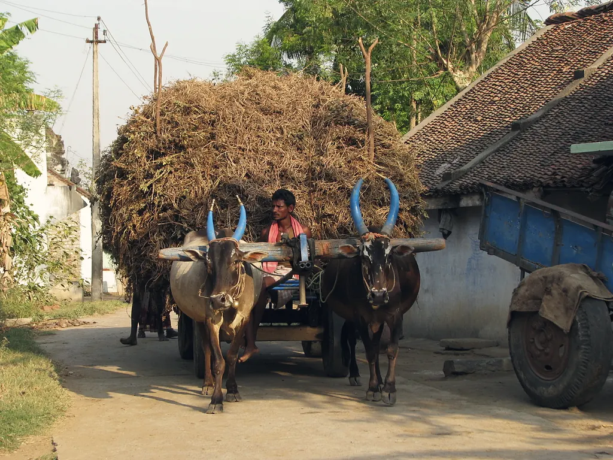
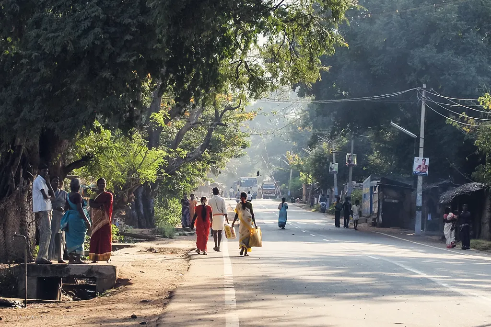
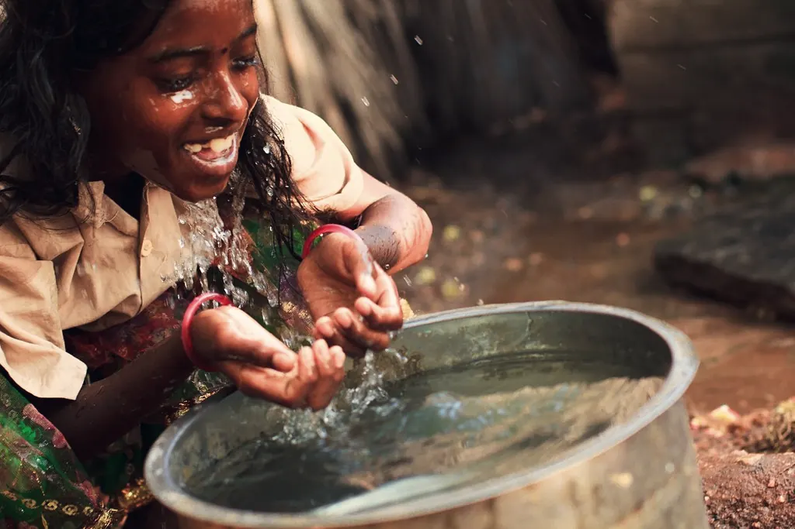
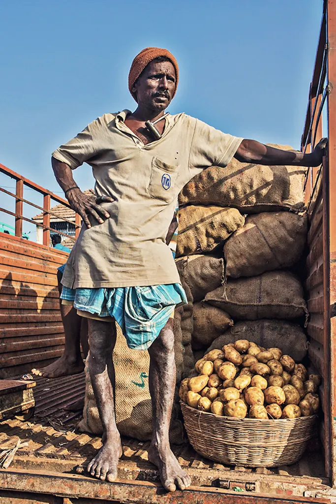
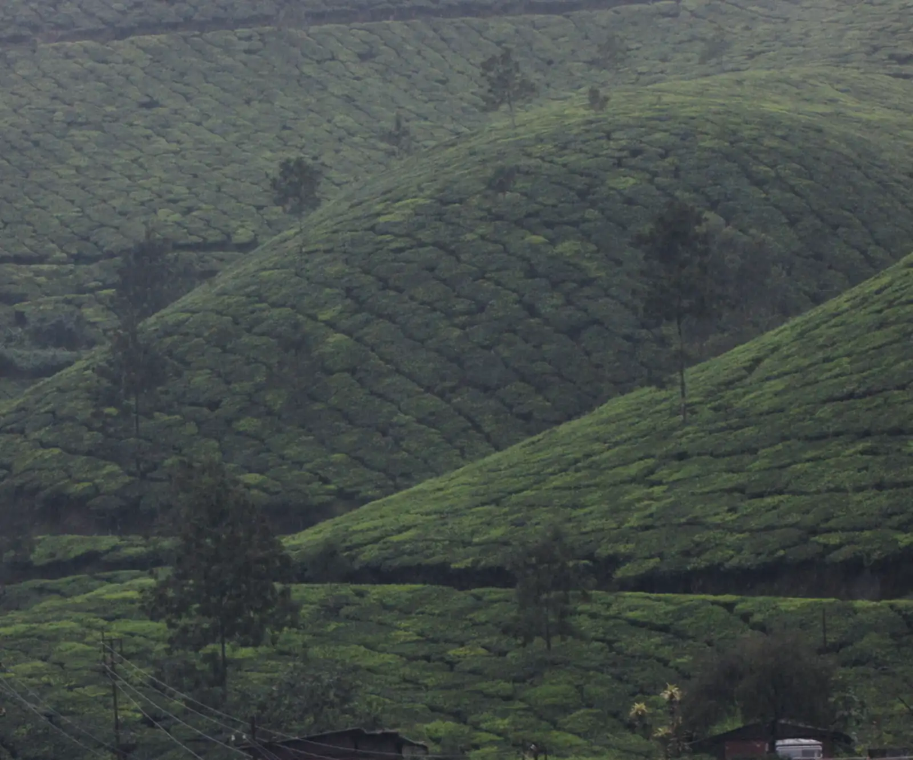

Corporate Solutions
Research & Strategy
Turning Market Understanding Into Smarter Decisions.
MART Global combines market intelligence, field research and strategic thinking to help organisations identify opportunities, understand consumers and make better decisions.
What We Do
Evidence That Leads to Action.
MART Global combines rigorous qualitative and quantitative research with deep field presence — reaching the villages, haats, households and institutions that conventional research often misses.
For more than three decades, our market and business research has helped clients see emerging markets clearly: who the consumer is, how decisions are made, where demand is forming and what it will take to win. Every study is designed around a business question — and points to the action that follows.
We work with
- Corporates 01
- Government 02
- Development organisations 03
- Institutions 04
- International organisations 05

- 01
Qualitative Research
In-depth interviews, focus groups, ethnography and immersions that reveal the why behind behaviour.
- 02
Quantitative Research
Large-sample surveys, audits and measurement designed for rural and low-literacy contexts.
- 03
Market Intelligence
Market sizing, competitive tracking and channel insight that keep strategy grounded.
- 04
Strategic Advisory
Translating evidence into clear choices, roadmaps and implementation plans.
Research Capabilities
Specialised studies for complex markets.
Market and business research across five specialised study types — each adaptable to rural, urban and base-of-the-pyramid contexts.
Understand who your customers are, how they differ and where the real opportunity lies — from district-level market profiles to household and retailer segmentation.
- Consumer & household profiling
- Village & market classification
- Segment sizing & prioritisation
- Retailer & channel profiling

Estimate the size and shape of demand, forecast how it will grow and set prices that work for both the customer and the business.
- Category & market sizing
- Volume and value forecasting
- Price sensitivity & willingness to pay
- Pack-price architecture

Test products, propositions and communication with real consumers before you invest — and refine them with evidence.
- Product & proposition testing
- Communication & creative testing
- Packaging & naming research
- Pilot & test-market evaluation

Continuous intelligence on markets, competitors and channels — structured to support faster and better decisions.
- Market & competitor tracking
- Distribution & retail audits
- Opportunity mapping
- Dashboards & decision support

Understand how decisions are really made — who influences them, where information comes from and what triggers a purchase.
- Purchase journeys & triggers
- Usage & attitude studies
- Influencers & decision-making
- Media & information habits

Our Approach
From Questions to Strategic Direction.
A disciplined five-stage process — flexible enough for a two-week diagnostic, robust enough for a multi-state study.
- 01
Discover
Frame the business question, map stakeholders and agree what a good decision looks like.
- 02
Research
Design and deploy qualitative and quantitative fieldwork — in markets, homes and institutions.
- 03
Analyse
Turn evidence into patterns, segments, forecasts and clear implications.
- 04
Strategize
Shape the choices: where to play, how to win and what to prioritise.
- 05
Activate
Pilot, measure and scale — with MART teams on the ground when needed.
How Else Can We Help?
Research is often only the beginning.
When evidence points to action, MART can stay with you — designing, implementing and scaling what the research recommends.
-
Large-Scale Program Implementation
Complex programs delivered through community participation, institutional partnerships and technology.
Explore -

CSR Solutions
Purpose-led CSR strategy, program design, implementation and impact measurement.
Explore -

Market Linkages
Connecting producers and rural enterprises with buyers, value chains and new markets.
Explore

Work with us
Let’s turn insight into opportunity.
Share the decision you are facing. We will help you design the research — and the strategy — that answers it.
Social Research
Research That Goes Beyond the Boardroom.
Our social research supports governments, CSR partners and development organisations across the full arc of a program — from understanding a situation to implementing the response.
Situational Awareness
Institution & Capacity Building
Marketing & Brand Building
Direct Implementation
Research for real‑world impact